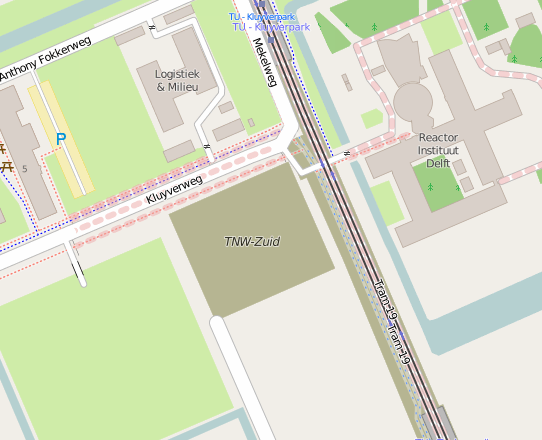
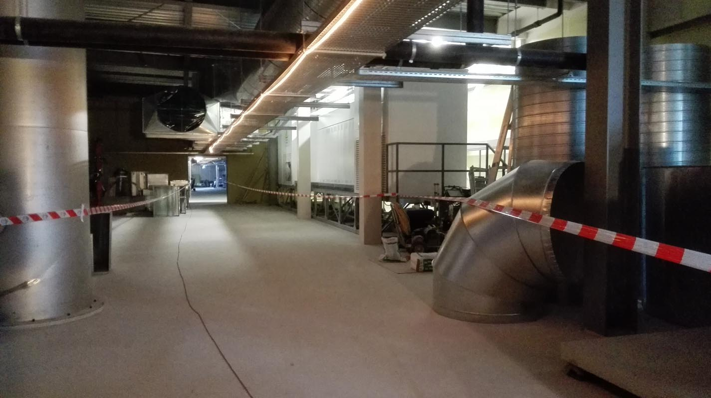
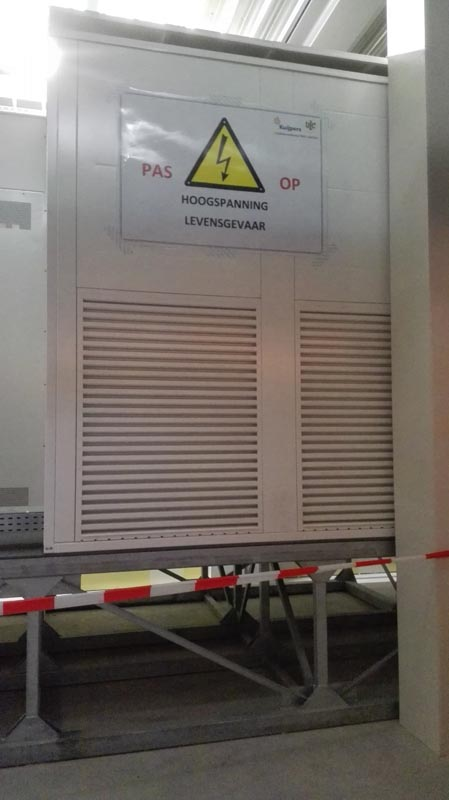

Bezoek TNW-zuid, Delft
In het kader van de Dag van bouw was het in aanbouw zijnde gebouw van Technische Natuurwetenschappen opengesteld voor bezoekers. Dit nieuwe gebouw zal onderzoek en onderwijs op het gebied van biotechnologie, bionanoscience en chemische technologie huisvesten.[1]
 Locatie van de bouwplaats: 51.98996, 4.38015 (kaart: OpenStreetMap)
Buitenzijde
Meest opvallende element zijn de gekleurde ramen. Deze ramen zijn voorzien van een speciale reflecterende folie. De kleur hangt af van de hoek waaronder het licht invalt. De folie laat alsnog een deel van het licht door, maar aan de binnenkant lijkt dit gewoon lichtblauw, alsof het normaal matglas betreft.
Afgezien van de kleuren lijkt het gebouw van buiten erg op het huidige TNW gebouw aan de Lorentzweg. Ook de gevel van het nieuwe gebouw bestaat uit niet-dragende betonelementen. De gebruikte gevelbekleding bevat beton, graniet en een witte kleurstof. Na uitharding worden de elementen gestraald voor een ruwere uitstraling.
 Gevel noordzijde, uitzicht richting oosten (reactorinstituut)
Gevel noordzijde, uitzicht richting oosten (reactorinstituut)
 Gevel noordzijde
Gevel noordzijde
 Gevel noordzijde
Gevel noordzijde
 Ter vergelijking het 'oude' TNW gebouw. Bron: repository.tudelft.nl
Ter vergelijking het 'oude' TNW gebouw. Bron: repository.tudelft.nl
Binnen
Van binnen is het gebouw geheel anders ingedeeld. Het midden bevat een groot atrium, waarin zich ook de receptie en een koffiebar bevinden. Bijzonder is dat het gebouw geen hoofdingang heeft, de noord- en zuid-ingang zijn gelijkwaardig. Aan de zuidkant zullen namelijk nog andere gebouwen van de faculteit TNW verrijzen. Buiten het atrium is de indeling niet erg interessant, met hoofdzakelijk kantoren bij de raamzijden, en laboratoria daar tegenover.
 Uitzicht naar de zuidzijde vanaf een kantoorruimte op de tweede verdieping.
Uitzicht naar de zuidzijde vanaf een kantoorruimte op de tweede verdieping.

Installaties en technologie
Uniek aan dit gebouw zijn de trillingsvrije vloeren voor enkele laboratoria op de begane grond, en de elektrische installaties.
De trillingsvrije vloeren zijn uitgevoerd met speciale heipalen, welke schuin de grond in zijn geheid. Vervolgens is hier een speciale rubberlaag overheen aangebracht. Verder wordt het grondwater automatisch weggepompt, de fundering is daarom omhuld met folie.
Vrijwel alle technische installaties zijn ondergebracht op de bovenste verdieping, naast het atrium. Hier is alle ruimte voor metersbrede ventilatiekanalen en luchtverversingsinstallaties. Hierdoor hoeven er geen lelijke witte dozen op het dak te staan, en zijn de installaties makkelijk te onderhouden en beschermd tegen de elementen.
De elektrische installatie is uniek in Nederland. Dit gebouw is namelijk een van de eerste gebouwen dat een eigen hoogspanningstranformator heeft. Het gebouwd is direct aangesloten op het hoogspanningsnet. Twee grote transformatoren zetten dit om naar 400V spanning, waarna dit wordt omgezet naar onder meer 230V netspanning. Deze ingewikkelde oplossing heeft niets te maken met de onderzoeksactiviteiten van de TU Delft, maar is uit kostenbesparing gebruikt. Door hoogspanning dichtbij de gebruikers om te zetten naar laagspanning, worden er namelijk honderden kilo's aan koper en andere materialen bespaard, naast een grote beperking van het energieverlies door weerstand in de draden.
 Rechts in het wit twee van de in totaal vier hoogspanningstranformators, bijna 3 meter hoog.

Tenslotte
Onverwacht blijkt de elektrische installatie een van de unieke kenmerken van dit gebouw. Esthetisch is het gebouw geen icoon, maar ook geen gedrocht. Mensen die geïnteresseerd zijn in BIM raad ik zeker aan om wat meer informatie te zoeken, alle installaties waren bijvoorbeeld als los 3D model beschikbaar, gescheiden voor elk gas en warm/koud water, wat fascinerende 3D modellen liet zien.
Geplande oplevering: 2016
Met dank aan Hurks en de aanwezige betrokkenen voor de enthousiaste ontvangst en uitleg.